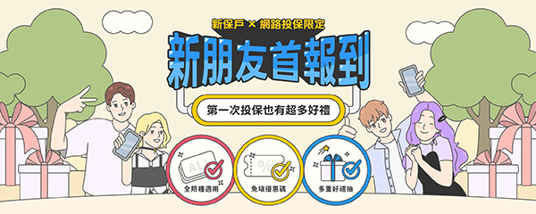
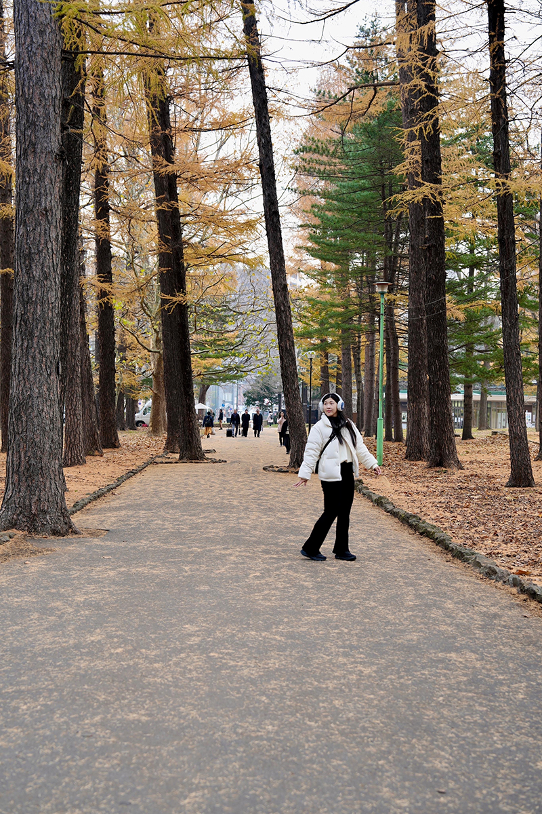

UI/UX + 前端切版
👋 嗨，我是 Tobey
資深 UI/UX 設計師 兼具「設計美感」與「前端思維」
喜歡把「設計」跟「前端」兩個世界結合起來，不管是系統化設計還是獨立 RWD 切版都難不倒我。
做專案時，同時把好看、好用跟程式寫不寫得出來通通考量進去，是個重視效率、也重視品質的團隊夥伴！
數位產品流程優化
主導多項大型官網與核心功能頁面改版，精於將複雜業務邏輯、使用者旅程與極端狀態，梳理為直覺且流暢的數位體驗。
制定 Design Guideline
負責從零建構系統化的 UI 組件與變數邏輯（Design System），有效降低跨團隊溝通與開發成本，確保多產品線體驗一致性。
擁有前端魂的設計師
具備獨立 Web 切版能力（HTML5 / CSS3 / RWD / SCSS）。精準評估開發可行性，與工程師無縫協作，大幅減少 UI QA 時程。
多元視覺控制力
融合電商網頁設計與平面雜誌排版的網格美學。
對字體、色彩與排版有極高敏銳度，能在不同數位媒介中精準駕馭視覺調性。
工作經歷
超過 10 年視覺與數位產品設計，專精 UI/UX 設計、Design System 制定與 RWD 切版實作
2022.01 - 至今
資深專員 (UI/UX Designer)
新安東京海上產險- 主導車險、住火險等核心產品官網首頁、投保流程頁面與行銷活動 UI 設計。
- 制定 Design Guideline 統一設計規範，優化投保體驗並大幅提升轉換率。
- 負責獨立 RWD 切版實作，運用前端基礎縮短開發時程、降低工程調校成本。
- 跨部門與 PM、前端工程師緊密合作，確保設計精準落地。
2020.12 - 2022.12
網頁設計師
牛爾 NARUKO- 主導公司網站視覺風格設計與電商品牌視覺規範制定。
- 設計並製作專案網頁、行銷活動頁、電子報 (EDM)，顯著提升用戶互動與轉換。
- 參與網站開發與維護，持續進行頁面更新、改版與動線連結優化。
2016.04 - 2020.08
網頁設計師
易飛網國際旅行社- 負責旅遊產品專案網頁、行銷活動頁與品牌電子報設計製作。
- 與業務、企劃及程式設計師跨團隊合作，協助旅遊電商平台改版與上線。
- 積累大量旅遊電商介面排版與複雜產品資訊架構梳理經驗。
精選作品
從 UI/UX 視覺設計到 RWD 獨立切版（HTML5 / SCSS）完整產品開發實例